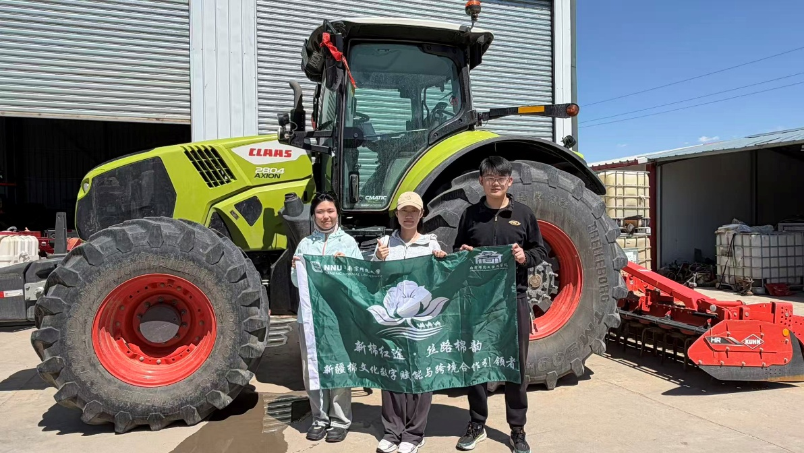

4.1 品牌故事
从一朵棉，到一种生活
「丝路棉韵」源于南京师范大学商学院「新棉红途」实践队的田野调查。团队跨越数千公里，深入新疆玛纳斯县棉田、华芳石河子纺织厂与艾德莱斯非遗基地，带着「新疆棉文化数字赋能与产业合作推动者」的使命，用青年的脚步丈量新疆棉从田间到产品的距离。
我们相信，好原料需要被看见、被理解、被信任。因此搭建这一 Web 平台，不仅展示产品，更以透明化溯源讲述控高塑形、地膜节水、机械采收背后的科学管理，呈现从丝路古道到现代生活的棉花文化旅程。品牌联合非遗匠人与本地产业集群，将艾德莱斯纹样融入杯垫、餐垫、摆画等日常文创，让数字经济红利惠及每一位辛勤耕耘的棉农。
- 溯源 — 深入玛纳斯智慧棉田，记录从种植到采收的真实画面
- 智造 — 走访华芳石河子纺织等企业，梳理从原棉到纱线的品质标准
- 非遗 — 探访艾德莱斯绸非遗基地，采集纹样素材与文化故事
- 传播 — 以网页平台与文创产品，让新疆棉故事走向更广阔的舞台